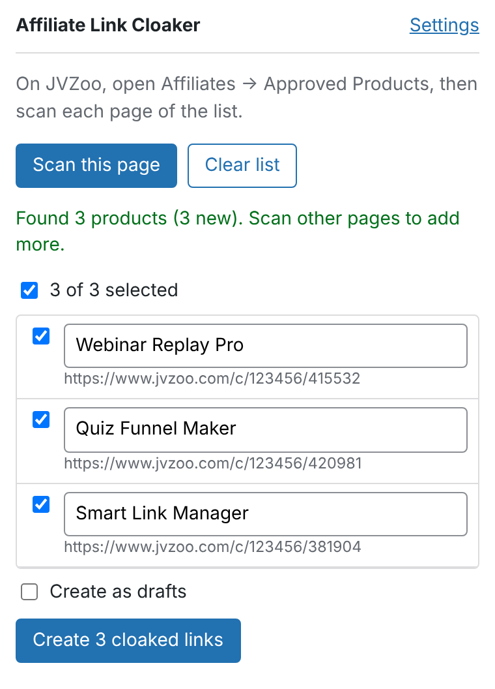

JVZoo extension
Create cloaked links for every JVZoo product you're approved to promote, straight from your Approved Products page.
Why an extension
JVZoo's API only works for vendors. It can list a vendor's own products, but not the products an affiliate is approved to promote, and it never returns affiliate links. Those only appear on jvzoo.com when you're signed in. The extension reads them in your own browser, so your JVZoo password is never shared with anyone.
Install
- Download aff-link-cloaker-extension-x.y.z.zip from the latest release and unzip it.
- In Chrome, Edge or Brave, open
chrome://extensionsand turn on Developer mode. - Click Load unpacked and choose the unzipped folder, then pin the extension to your toolbar.
You need the Affiliate Link Cloaker plugin, version 0.3.0 or newer, on your WordPress site.
Connect to WordPress
- In WordPress, open Users → Profile and scroll to Application Passwords. Enter a name such as "Link Cloaker extension", click Add New Application Password and copy the password. Your site needs HTTPS for this.
- Open the extension's Settings, by clicking it and choosing Settings, and enter your site address, WordPress user name and that password.
- Click Save & test connection. Your browser asks to let the extension access your site. Allow it, and you'll see "Connected to … as …".
Use it
- Sign in to JVZoo and open Affiliates → Approved Products.
- Click the extension, then Scan this page. If your list has several pages, scan each one. Products collect in the extension until you send them.
- Untick anything you don't want and fix any names.
- Click Create cloaked links. Each result shows its cloaked URL with a Copy button. Products already on your site are reported as "already there", never duplicated.

How it finds links
It doesn't depend on the exact layout of JVZoo's pages. It looks for:
- Your affiliate links anywhere on the page, such as
https://www.jvzoo.com/c/<your ID>/<product ID>or thejvz1.com–jvz9.comshort links, including in text boxes and copy buttons. - Products linked to their Affiliate Information page, for when links only appear after clicking "Get Link". It builds those links from the product ID and your affiliate ID. Your affiliate ID comes from any link on the page, or you can enter it in Settings.
Permissions and privacy
| jvzoo.com | Read the page you're on, only when you click Scan this page. |
|---|---|
| Your site | Send links to it. Asked for when you save Settings, and only for the address you enter. |
| Storage | Your settings, and the products you've scanned in this browser session. The Application Password stays in this browser, and you can revoke it from your WordPress profile at any time. |
Troubleshooting
- "Not signed in": check the user name and Application Password, and that your site uses HTTPS.
- "Plugin wasn't found": make sure Affiliate Link Cloaker 0.3.0 or newer is active.
- "Found products but none of your links": enter your JVZoo affiliate ID in Settings. It's the first number in your JVZoo links:
jvzoo.com/c/12345/67890. - Nothing found on your Approved Products page: JVZoo's page may be laid out differently than expected. Open an issue with a saved copy of the page (File → Save Page As), with personal details removed.